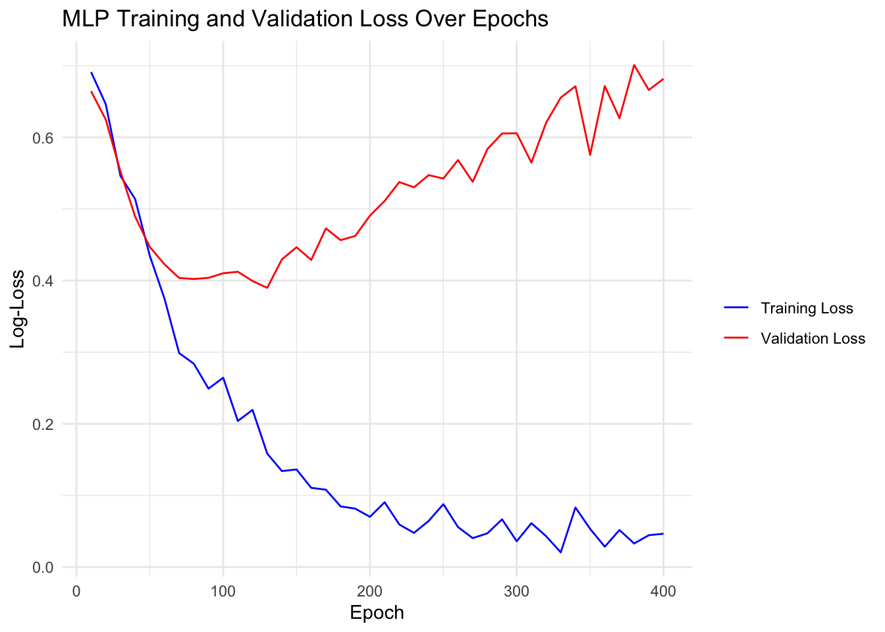

library(torch)
cuda_is_available()[1] TRUEMethods for increasing training efficiency can be roughly split into:
Using a GPU is crucial when training relatively large neural networks because GPUs are specifically designed to handle the parallel processing required for complex computations. To use a GPU in mlr3torch, we can set the device parameter to “cuda”. By default, it is set to “auto”, which will use a GPU if available and otherwise fall back to the CPU.
To check if a GPU is available, we can use the torch::cuda_is_available() function.
library(torch)
cuda_is_available()[1] TRUEIf you have an M1 Mac (or later), you can also use the available graphics card by setting the device parameter to "mps". You can check this by running:
backends_mps_is_available()[1] FALSETo demonstrate the speed improvements obtained by using a GPU, we conduct a large matrix operation on a GPU and a CPU. We start by randomly sampling a matrix of size 1000x1000.
x_cpu = torch_randn(1000, 1000, device = "cpu")Below, we perform a matrix multiplication on the CPU and the GPU and compare the timings.
# this will only run if a GPU is available
x_cuda = x_cpu$cuda()
bench::mark(
cpu = x_cpu$matmul(x_cpu),
cuda = x_cuda$matmul(x_cuda)
)# A tibble: 2 × 6
expression min median `itr/sec` mem_alloc `gc/sec`
<bch:expr> <bch:tm> <bch:tm> <dbl> <bch:byt> <dbl>
1 cpu 1.47ms 1.73ms 568. 2.47KB 0
2 cuda 40.67µs 46.88µs 2776. 0B 0Training large networks on a CPU is not a recommended approach, but it can be a viable option for smaller networks. You can still use multiple threads to speed up the execution of operations. The number of threads can be specified using the torch_set_num_threads() function:
torch_set_num_threads(10L)Question 1: On a CPU with 4 cores, does it make sense to set the number of threads to values greater than 4? Explain your answer.
Question 2: On a CPU with 64 cores, is it always the case that using 64 threads is better than using 32 threads?
Not necessarily. Using more threads will mean that:
Besides parallelizing the computation of operations in the forward and backward pass, another possible bottleneck is the loading of data. There are various ways to improve data loading speed:
dataset classThese approaches will now be discussed.
When implementing a dataset, we need to define:
$.getbatch() (instead of $.getitem()) is beneficialThe tiny imagenet dataset is a dataset of 100,000 images of size 64x64. It is a subset of the famous imagenet dataset. Below, we show some examples from it:
We will now consider different ways to write a torch::dataset implementation for this data. Assume we have some image paths stored in a character vector as well as in an array where they are already loaded into memory.
str(image_paths) chr [1:100] "/home/fischers/.cache/R/mlr3torch/datasets/tiny_imagenet/raw/tiny-imagenet-200/train/n01443537/images/n01443537_0.JPEG" ...str(image_array) num [1:100, 1:3, 1:64, 1:64] 1 0.0784 0.4706 0.5647 0.5647 ...An individual image can, for example, be loaded using the torchvision::base_loader() function:
library(torchvision)
str(base_loader(image_paths[1])) num [1:64, 1:64, 1:3] 1 1 1 1 0.984 ...Question 1: Reading From Disk or RAM
Which of the following is the faster way to load the images? Explain why.
Loading the images from disk:
ds_disk = dataset("image_paths",
initialize = function(image_paths) {
self$image_paths = image_paths
},
.getitem = function(i) {
torch_tensor(torchvision::base_loader(self$image_paths[i]))
},
.length = function() {
length(self$image_paths)
}
)(image_paths)Loading the images from an array:
ds_ram = dataset("image_array",
initialize = function(image_array) {
self$image_array = image_array
},
.getitem = function(i) {
torch_tensor(self$image_array[i, , , ])
},
.length = function() {
nrow(self$image_array)
}
)(image_array)Generally, loading images from RAM is significantly faster than loading them from disk. Although the benchmark presented below may seem somewhat ‘unfair’ since ds_ram has already loaded the images into memory, this difference is evident in practice. When iterating over the dataset for multiple epochs, the first method will need to reload the images from disk for each epoch, while the second method only requires a single loading of the images into memory.
iter = function(ds, ..., epochs = 1) {
dl = torch::dataloader(ds, batch_size = 16, ...)
for (epoch in seq_len(epochs)) {
coro::loop(for(batch in dl) {
batch
})
}
}
bench::mark(
disk = iter(ds_disk, epochs = 10),
ram = iter(ds_ram, epochs = 10),
check = FALSE
)Warning: Some expressions had a GC in every iteration; so filtering is disabled.# A tibble: 2 × 6
expression min median `itr/sec` mem_alloc `gc/sec`
<bch:expr> <bch:tm> <bch:tm> <dbl> <bch:byt> <dbl>
1 disk 576ms 576ms 1.74 108.7MB 5.21
2 ram 441ms 450ms 2.22 94.8MB 6.67Question 2: (Don’t) Copy that
Consider now the next dataset implementation:
ds_tensor = dataset("tensor",
initialize = function(image_array) {
self$tensor = torch_tensor(image_array)
},
.getitem = function(i) {
self$tensor[i, ..]
},
.length = function() {
nrow(self$tensor)
}
)(image_array)Do you think this implementation is faster or slower than the ds_ram implementation? Explain why.
This implementation is faster than the ds_ram implementation. This is because the ds_tensor implementation copies the R array to a torch tensor only once, whereas the ds_ram implementation copies the R array to a torch tensor for each item.
bench::mark(
tensor = iter(ds_tensor),
array = iter(ds_ram),
check = FALSE
)# A tibble: 2 × 6
expression min median `itr/sec` mem_alloc `gc/sec`
<bch:expr> <bch:tm> <bch:tm> <dbl> <bch:byt> <dbl>
1 tensor 9.6ms 11.5ms 86.2 73.21KB 2.10
2 array 35.5ms 38.4ms 25.7 9.44MB 8.57Question 3: $.getbatch() vs $.getitem()
Which implementation is faster? Explain why.
ds_tensor_batch = dataset("tensor_batch",
initialize = function(image_array) {
self$tensor = torch_tensor(image_array)
},
.getbatch = function(i) {
self$tensor[i, .., drop = FALSE]
},
.length = function() {
nrow(self$tensor)
}
)(image_array)The $.getbatch() implementation is faster than the $.getitem() implementation. This is because when using the $.getitem() method, the batch for indices ids is obtained by calling $.getitem(id) for each index in ids and then stacking them together, which requires a new tensor allocation. Slicing the tensor, however, avoids this allocation when shuffle = FALSE (which is also the default).
bench::mark(
getbatch = iter(ds_tensor_batch),
getitem = iter(ds_tensor),
check = FALSE
)# A tibble: 2 × 6
expression min median `itr/sec` mem_alloc `gc/sec`
<bch:expr> <bch:tm> <bch:tm> <dbl> <bch:byt> <dbl>
1 getbatch 3.52ms 5.2ms 198. 12.3KB 2.28
2 getitem 9.58ms 10.5ms 91.7 54.7KB 2.18In Deep Learning, datasets can be very large, and it might therefore be the case that the data is simply too large to fit into memory. In this case, we can use parallel data loading to speed up the data loading process. Instead of loading the data sequentially in the main process, other R processes will be started that execute the data loading. For example, if we set num_workers = 4L, 4 R processes will be started that load the data, while the main process is free to train the model. These processes then send the batches to the main process. The image below visualizes this process:

Creating such a parallel dataloader is as easy as setting the num_workers parameter to a value greater than 0.
Note that in the current R implementation, parallel data loading is only beneficial when loading an individual batch is relatively slow, e.g., because of loading the data from disk or because of expensive preprocessing. This will hopefully be improved in the future (by a faster implementation of the parallel dataloader).
One thing we have ignored so far is that when training using a GPU, the data needs to be moved from RAM to the GPU. This is because a GPU has its own memory (VRAM), and the data needs to be moved to this memory before GPU operations can be performed. The moving of the data to the GPU cannot be done on the processes that are loading the data but must be done in the main process, i.e., after the batch was received from (possibly parallelized) dataloader. One way to speed up the data loading process is to pin the memory of the data that is transferred to the GPU. Before a tensor can be moved from RAM to VRAM, it needs to be in so-called page-locked memory, which can be enabled using the pin_memory parameter of dataloader()..

iter_cuda = function(ds, pin_memory = TRUE) {
dl = torch::dataloader(ds, batch_size = 16, pin_memory = pin_memory)
coro::loop(for(batch in dl) {
batch$cuda()
})
}
bench::mark(
not_pinned = iter_cuda(ds_disk, pin_memory = FALSE),
pinned = iter_cuda(ds_disk, pin_memory = TRUE)
)# A tibble: 2 × 6
expression min median `itr/sec` mem_alloc `gc/sec`
<bch:expr> <bch:tm> <bch:tm> <dbl> <bch:byt> <dbl>
1 not_pinned 97.9ms 99.1ms 9.88 10.6MB 0
2 pinned 97.5ms 118.1ms 8.93 10.6MB 0In order to use parallel data loading or memory pinning with mlr3torch, these parameters can simply be specified in the learner:
lrn("classif.mlp", num_workers = 8L, pin_memory = TRUE, device = "cuda")Some special care needs to be taken when using torch (or mlr3torch) in order to get good performance. In the future, this will hopefully not be necessary anymore, but is currently required.
In torch, different versions of optimizers exist:
optim_adamw<optim_adamw> object generator
Inherits from: <inherit>
Public:
initialize: function (params, lr = 0.001, betas = c(0.9, 0.999), eps = 1e-08,
loop_fun: function (group, param, g, p)
step: function (closure = NULL)
clone: function (deep = FALSE)
Parent env: <environment: 0x55e8a614d168>
Locked objects: FALSE
Locked class: FALSE
Portable: TRUEoptim_ignite_adamw<optim_ignite_adamw> object generator
<optim_ignite> object generator
Inherits from: <inherit>
Public:
initialize: function (params, lr = 0.001, betas = c(0.9, 0.999), eps = 1e-08,
clone: function (deep = FALSE)
Private:
.config_names: lr betas eps weight_decay amsgrad
.state_names: exp_avg exp_avg_sq max_exp_avg_sq step
.optim: function (params, ...)
.get_states: function (opt)
.set_states: function (opt, params, states)
.add_param_group: function (opt, params, lr, betas, eps, weight_decay, amsgrad)
.assert_params: function (lr, betas, eps, weight_decay, amsgrad)
.set_param_group_options: function (opt, list)
.zero_grad: function (opt)
.get_param_groups: function (ptr)
Parent env: <environment: 0x55e85d92e490>
Locked objects: FALSE
Locked class: FALSE
Portable: TRUEThe ‘ignite’ indicates that the optimizer is a version that is optimized for performance. Not for all optimizers does an ignite version exist, but for the most common ones, there is one.
Below, we compare the performance of the default optimizer and the ignite optimizer and see that the latter is considerably faster.
adamw = as_torch_optimizer(torch::optim_adamw)
ignite_adamw = as_torch_optimizer(torch::optim_ignite_adamw)
learner = lrn("classif.mlp", epochs = 10, neurons = c(100, 100),
batch_size = 32, optimizer = adamw)
learner_ignite = learner$clone(deep = TRUE)
learner_ignite$configure(
optimizer = ignite_adamw
)
task_sonar = tsk("sonar")
bench::mark(
learner$train(task_sonar),
learner_ignite$train(task_sonar),
check = FALSE
)# A tibble: 2 × 6
expression min median `itr/sec` mem_alloc `gc/sec`
<bch:expr> <bch:tm> <bch:tm> <dbl> <bch:byt> <dbl>
1 learner$train(task_sonar) 1.26s 1.26s 0.795 16.2MB 0
2 learner_ignite$train(task_sonar) 483.69ms 483.69ms 2.07 12.1MB 2.07JIT (Just-In-Time) compilation is a runtime optimization technique that compiles code into machine code during execution rather than beforehand. This has different advantages:
In torch, this can either be done using TorchScript or by tracing a model. We will briefly discuss both approaches, but for more information, see the torch documentation.
TorchScript is a subset of Python – i.e., its own programming language – that can be used to define compiled functions. In R, this is available via the jit_compile function.
f = jit_compile("
def f(x, w, bias):
return x @ w + bias
")$f
x = torch_randn(10, 10)
w = torch_randn(10, 1)
bias = torch_randn(1)
out = f(x, w, bias)
str(out)Float [1:10, 1:1]Besides syntax, there are some notable differences between TorchScript and R to be aware of:
Below, we define a function that takes a list of tensors and calculates their sum.
sum_jit = jit_compile("
def sum_jit(xs: List[Tensor]):
output = torch.zeros_like(xs[0])
for x in xs:
output = output + x
return output
")$sum_jit
sum_jit(list(torch_randn(1), torch_randn(1)))torch_tensor
-0.7121
[ CPUFloatType{1} ]The alternative to writing TorchScript is to write your module in R and to use jit_trace to compile it.
f2 = function(x, w, bias) {
x$matmul(w) + bias
}
# need to provide some example input
# arguments are passed by position
f2 = jit_trace(f2, torch_randn(10, 10), torch_randn(10, 100), torch_randn(100))
out2 = f2(x, w, bias)
torch_equal(out, out2)[1] TRUEAn advantage of trace-compilation is that it can be applied to modules, which is currently not possible with jit_compile.
net = nn_sequential(
nn_linear(10, 100),
nn_relu(),
nn_linear(100, 10)
)
net_jit = jit_trace(net, torch_randn(10, 10))
torch_equal(net(x), net_jit(x))[1] TRUEHowever, trace-compilation is restrictive because it only records operations applied to torch tensors and is unaware of R control flow, so you need to be careful when using it. Furthermore, it only accepts torch tensors as arguments. For many simple modules, trace-compilation should usually work. You can also check this by running the original and trace-jitted module on some example inputs and see if they return the same result.
A trace-jitted module does respect the mode of the network, i.e., whether it is in train mode or eval mode.
In mlr3torch, trace compilation is also available and can be enabled by setting jit_trace = TRUE in the learner.
learner = lrn("classif.mlp", jit_trace = TRUE)You can also combine TorchScript with tracing:
net_both = nn_module(
initialize = function() {
self$linear = nn_linear(1, 1)
},
forward = function(x) {
self$linear(sum_jit(x))
}
)()
net_both(list(torch_randn(1), torch_randn(1)))torch_tensor
1.0027
[ CPUFloatType{1} ][ grad_fn = <ViewBackward0> ]net_both(list(torch_randn(1)))torch_tensor
0.01 *
8.5286
[ CPUFloatType{1} ][ grad_fn = <ViewBackward0> ]Question 1: Consider the trace-jitted function below. Can you predict the output of the last two lines? Can you explain why this happens?
f = function(a, b, multiply) {
if (multiply$item()) {
a * b
} else {
a + b
}
}
fjit = jit_trace(f, torch_tensor(1), torch_tensor(2), torch_tensor(TRUE))
fjit(torch_tensor(2), torch_tensor(3), torch_tensor(TRUE))
fjit(torch_tensor(2), torch_tensor(3), torch_tensor(FALSE))fjit(torch_tensor(2), torch_tensor(3), torch_tensor(TRUE))torch_tensor
6
[ CPUFloatType{1} ]fjit(torch_tensor(2), torch_tensor(3), torch_tensor(FALSE))torch_tensor
6
[ CPUFloatType{1} ]Question 2: Answer the same question for the following function:
f = function(a, b, multiply) {
torch_where(multiply, a * b, a + b)
}
fjit = jit_trace(f, torch_tensor(1), torch_tensor(2), torch_tensor(TRUE))
fjit(torch_tensor(2), torch_tensor(3), torch_tensor(TRUE))
fjit(torch_tensor(2), torch_tensor(3), torch_tensor(FALSE))fjit(torch_tensor(2), torch_tensor(3), torch_tensor(TRUE))torch_tensor
6
[ CPUFloatType{1} ]fjit(torch_tensor(2), torch_tensor(3), torch_tensor(FALSE))torch_tensor
5
[ CPUFloatType{1} ]Another way to speed up the training process is to use mixed precision training. This technique involves training the model using both 16-bit and 32-bit floating point numbers. This allows reducing the memory footprint of the model and speeding up the training process. We won’t cover this here, but refer to the torch documentation that explains how to do this.
For more details on this topic, see the corresponding chapter in the mlr3 book.
As we have already seen in one of the previous notebooks, in deep learning, some part of the data is often used for validation purposes. This allows monitoring the performance of the model on unseen data.
In mlr3torch, we can track the performance of the model on a validation set by specifying:
validate, which is the ratio of the data that is used for validationmeasures_valid, which is a list of measures to evaluate the validation performanceeval_freq, which is the frequency at which the validation is performedcallbacks, which is a list of callbacks to use during training, in this case, we use the t_clbk("history") callback, which records the performance of the model on the validation set at regular intervals, enabling us to monitor and analyze the model’s performance over time.task = tsk("sonar")
mlp_learner = lrn("classif.mlp",
neurons = c(50, 50), batch_size = 256, epochs = 400,
optimizer = t_opt("adam", lr = 0.003),
predict_type = "prob", jit_trace = TRUE,
# Validation / Performance Monitoring
validate = 0.3, # how much data to use for validation
measures_valid = msr("classif.logloss"), # how to evaluate train performance
measures_train = msr("classif.logloss"), # how to evaluate validation performance
callbacks = t_clbk("history"), # history callbacks save train and validation performance
eval_freq = 10 # after how many training epochs to perform validation
)
mlp_learner$train(task)
history = mlp_learner$model$callbacks$history
head(history)Key: <epoch>
epoch train.classif.logloss valid.classif.logloss
<num> <num> <num>
1: 10 0.6852658 0.6735347
2: 20 0.6328315 0.6344009
3: 30 0.5658245 0.5613283
4: 40 0.4799470 0.4861451
5: 50 0.4428200 0.4464173
6: 60 0.4032538 0.4441608Below we plot the training and validation for the different epochs:

Instead of only monitoring the validation loss (and watching it get worse and worse), we can also stop the training process dynamically when the validation loss begins to increase. This regularization technique is called early stopping, and it prevents overfitting during the training of iteratively trained machine learning models.
The key configuration option for early stopping is the patience parameter, which defines the number of epochs to wait after the last improvement in validation loss before stopping the training. For example, if the patience is set to 5, the training will continue for 5 additional epochs after the last observed improvement in validation loss. If no improvement is seen during this period, training will be halted.
Advantages of early stopping include:
Now, let’s train the learner again using early stopping with a patience of 5 epochs:
mlp_learner$param_set$set_values(
patience = 5
)
mlp_learner$train(task)
mlp_learner$internal_tuned_values$epochs[1] 150Beyond only tuning the number of epochs, mlr3’s internal tuning mechanism also allows tuning the number of epochs internally while using an offline tuning method to optimize other hyperparameters. To use this, we can set the parameters we want to tune using to_tune(), but need to set internal = TRUE for the epochs parameter.
library(mlr3tuning)
mlp_learner$param_set$set_values(
epochs = to_tune(upper = 100, internal = TRUE),
opt.lr = to_tune(lower = 1e-4, upper = 1e-1, logscale = TRUE)
)We could now pass this learner to a tuner as usual.
One other important technique to improve the performance of deep learning models is data augmentation. It is a technique used to increase the diversity and quantity of training data without actually collecting new data. By applying various transformations to the existing dataset, data augmentation helps improve the generalization capabilities of machine learning models, reduce overfitting, and enhance model robustness. This is especially crucial when you have limited data. We will here demonstrate this using images, but the concept can also be applied to other data types.
Augmentation operations for images can consist of rotation, flipping, translating, grey scaling, etc. Which data augmentation is admissible, depends on the task:
In other words, the data augmentation must be compatible with the invariances of the machine learning problem. More formally, we can apply a function \(g\) to the data \(x\) to a data point \(g(x)\) if for the true relationship \(f\) we have that \(f(g(x)) = f(x)\).
In mlr3torch, data augmentation is available via PipeOps of the form po("augment_"). Currently, only augmentation operators from the torchvision package are available, but you can also add your own.
augment = po("augment_random_resized_crop") %>>%
po("augment_random_horizontal_flip") %>>%
po("augment_random_vertical_flip")We can just create a new GraphLearner that includes the augmentation steps as well as a ResNet-18 learner. When this learner is trained, it will apply the augmentation operations to the training data.
resnet_augmented = as_learner(augment %>>% lrn("classif.resnet18"))Question 1: Do you think data augmentation should be applied to the validation set?